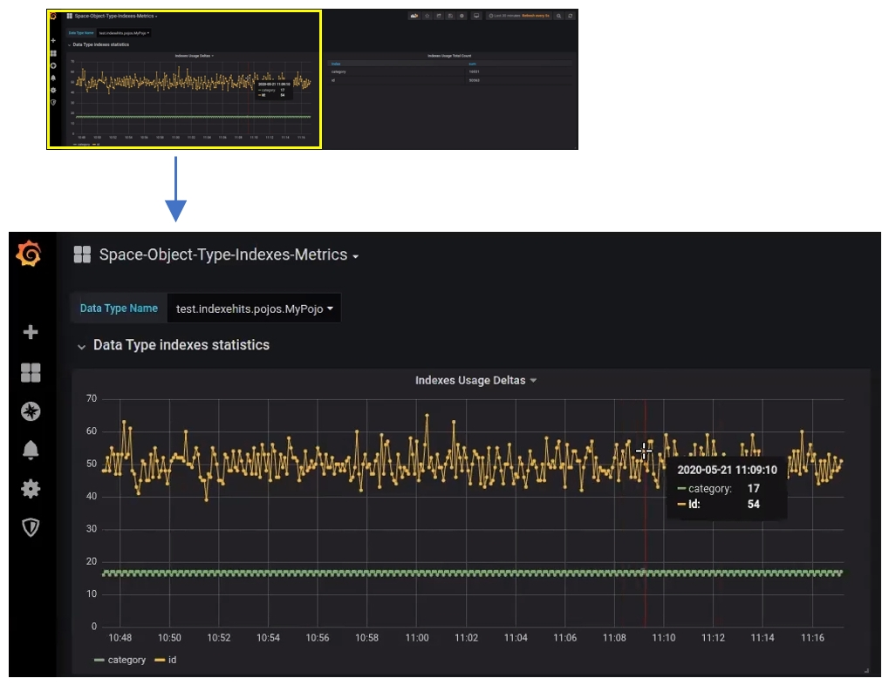
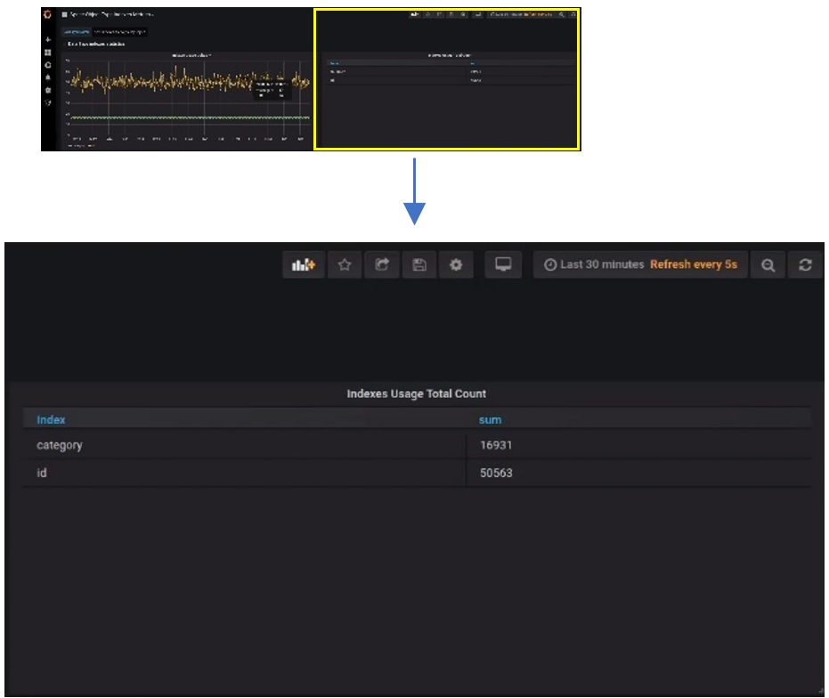

One of the key challenges of administrators and developers is to find the best balance between the benefits of having many indexes, and the memory footprint required by the indexes. As a guide, an efficient index means an index that is heavily used by applications or queries, and consumes a minimal amount of storage space. Indexes that are used infrequently can be analyzed for their efficiency.
In order to analyze index efficiency, the user can review two types of information within the Ops Manager:
This information is stored as part of InsightEdge metrics, and can be reviewed using Grafana or Ops Manager.
Statistics can be displayed for each index, for short or extended time periods. In addition to the five-minute index metrics available in Ops Manager, Grafana provides various dashboards that display information for different defined time periods.
See
The Space dashboard contains multiple charts or graphs with information such as the number of entries etc. In addition to these charts, two new charts – Index Hits Trend and Total Number of Hits per Index – are available.
The Index Hits Trend chart shows the total number of hits per index by defined time period. It is possible to monitor the last 24 or 48 hours in order to identify indexes with minimal or no usage:

The Total Number of Hits per Index chart shows a summary or total view of all index hits from the beginning of deployment:

The combination of both charts enables users to review the overall usage of an index and the actual usage from the last few days. This enables analyses of indexes that are rarely or never used, or that are used in specific time frames – for example, an index that was in use a month ago but due to changes in application code, was not used recently.